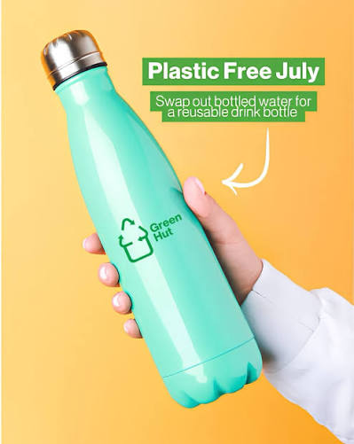

Indoor Plant

Discover our collection of nature-inspired products designed to bring a little more greenery and sustainability into your everyday life.


Our nature-inspired products are thoughtfully selected to bring the beauty of the outdoors into your everyday life. From refreshing indoor plants to elegant bamboo planters, each product is designed to create a peaceful, natural atmosphere while encouraging a deeper connection with nature.
We also believe that small choices can make a meaningful difference.
Choosing reusable and environmentally friendly products can help reduce
waste and support a more sustainable lifestyle. Together, we can enjoy
the beauty of nature while taking simple steps to protect our planet for
future generations.
Our products are inspired by nature and selected with sustainability in mind. They are designed to bring more greenery, simplicity, and eco-friendly choices into your everyday life.